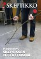
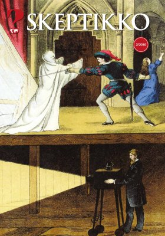
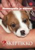
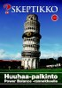
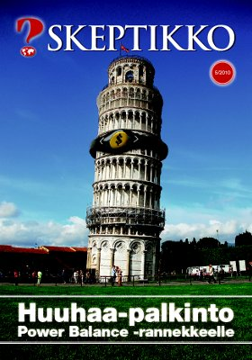

Skeptikko-lehti 2010
Skeptikko on Skepsis ry:n vuoden 2010 aikana viidesti ilmestynyt jäsenlehti. Verkkoversiosta löydät lehtien sisällysluettelon ja valikoituja artikkeleita.

Skeptikko 1/2010
- Vesa Tenhunen ja Denis Galkin: Varpu halkesi ja haarat katkesivat – Vesisuonia ei löytynyt
- Ada: Skepponen
- Sokrates-palkinto Kari Enqvistille
- Skeptikolle uusi toimitusneuvosto
- Sebastian Porceddu: Magian ja tieteen rajalla
- Juha Leinivaara: Hengenvaarallista peliä homeopatialla
- Pertti Laine: Puheenjohtajan palsta
- Skeptikko 20 v. sitten
- Ihme juttuja
- Denis Galkin ja Vesa Tenhunen: ”Mitä tää on?”
- Sami Feiring: Aforismeja skeptikoille
- Jose Ahonen: Näin teet paranormaalin ilmiön. ”Selvänäkö”
- Chris Russon ja Joe Rudy: Näin teimme Morristownin ufohuijauksen
- Aina sattuu ja tapahtuu
- Tatu Vanhanen: Etninen nepotismi ja etniset konfliktit
- Osmo Tammisalo: Rakastuvatko naiset renttuihin?

Skeptikko 2/2010
- Risto K. Järvinen: Pääkirjoitus
- Risto K. Järvinen: Homeopatiaputiikit Skeptikon testissä
Samat oireet – eri lääkkeet - Heikki Helanterä: Evoluutiobiologian nykytila muurahaistutkijan näkökulmasta
- Risto K. Järvinen: Uskomusten uhri
- Ada: Skepponen
- Heikki Nevala: Taikurit taikakuvien tekijöinä
- Pertti Laine: Puheenjohtajan palsta
- Risto K. Järvinen: ”Sokrates-palkinnon velvoittava polte”
- Ihme juttuja
- Juha Leinivaara: Juonitteleva joogi
- Jose Ahonen: Näin teet paranormaalin ilmiön. ”Psykokinesia”
- Risto K. Järvinen: DVD: Ihmebantu
- Jussi K. Niemelä:
KIRJAT: Richard Dawkins: Maailman hienoin esitys. Evoluution todisteet
KIRJAT: Kari Enqvist: Kuoleman ja unohtamisen aikakirjat - Tiina Raevaara:
KIRJAT: Tapio Puolimatka: Tiedekeskustelun avoimuuskoe - Skeptikko 20v.
Skeptikko 3/2010
- Pertti Laine: Kaukoparantaja pilasi joukkoitsemurhan?
- Risto K. Järvinen: Tähti tuli Suomeen
- Sirkka Harjunmaa: Minä skeptikko
- Ada: Skepponen
- Olli Erjanti: Elinvoimaa energiasta – Energian käsite uushenkisissä liikkeissä
- Pertti Laine: Puheenjohtajan palsta
- Ilpo V. Salmi: Koetun todellisuuden luonteesta
- Risto K. Järvinen: Miksi asiat ovat niin kuin ovat?
- Mustelinin rahaston stipendi Janne Asumaalle
- Juha Leinivaara: Tyhjästä voi nyhjäistä
- Jose Ahonen: Näin teet paranormaalin ilmiön. ”Elastinen mystikko”
- Juha Leinivaara: Simon Singh selätti Britannian Kiropraktiikkaliiton
- Skeptikko 20 vuotta sitten
- Ihme juttuja
- Keskustelua

Skeptikko 4/2010
- Risto K. Järvinen: Pääkirjoitus
- Tiina Raevaara: Homeopatia, lumevaikutus ja eläimet
- Pertti Laine: Huuhaa-palkinto oli karmea virhe?
- Ada: Skepponen
- Olli Erjanti: Muuntuneet tajunnantilat – tuoko hiljainen mieli hyvän olon?
- Pertti Laine: Puheenjohtajan palsta
- Skeptikko 20 v. sitten
- Jose Ahonen: Näin teet paranormaalin ilmiön
- Juha Leinivaara: Epämääräistä värähtelyä
- Denis Galkin: Skepsis went festarit
- Ihme juttuja
- Risto K. Järvinen:
KIRJAT: Äiti Amma pelasti suomalaisministerin? - Tiina Raevaara:
KIRJAT: Uskovan ja uskomattoman kosmologiaa - Jussi K. Niemelä:
KIRJAT: Uskomusten, uskontojen ja maailmankuvien taustamekanismeista
 
Skeptikko 5/2010
- Pertti Laine: Pääkirjoitus
- Denis Galkin: Kansanparantaja vankilaan seksuaalisesta hyväksikäytöstä
- Ada: Skepponen
- Kirsi Virtanen: Median suhde humpuukiin
- Pertti Laine: Puheenjohtajan palsta
- Risto K. Järvinen: Huuhaa-palkinto Power Balance -rannekkeelle
- Ilpo V. Salmi: Pyramideilla jälleen (lyhentämätön versio)
- Risto K. Jãrvinen: Salaisuudet paljastuvat
- Denis Galkin, Vesa Tenhunen, Tomi Vainio: Elämän synnyn arvoitus. Avoin kirje Matti Leisolalle – ja vastaus
- Juha Leinivaara: Illuminati rules?
- Juha Vuorio: Tietoisku ilmastonmuutoksesta
- Jose Ahonen: Näin teet paranormaalin ilmiön
- Ihme juttuja
- Heikki Nevala:
KIRJAT: Puolustuspuheenvuoro skeptisen ajattelun tärkeydestä - Juha Leinivaara: Uhkaava ilmiö Kalifornian taivaalla
- Anto Leikola: Mitä Darwin sanoi uskontojen synnystä
- Skeptikko 20 v. sitten
Kaikkien artikkelien © Copyright 2010 Skeptikko-lehti ja kirjoittaja.
Kirjoitukset vapaasti siteerattavissa ja levitettävissä ei-kaupallisiin tarkoituksiin, lähteeksi mainittava kirjoittajan lisäksi Skeptikko-lehti numeroineen.


{kind=link}
{kind=link}
{kind=link}
{kind=link}
{kind=link}